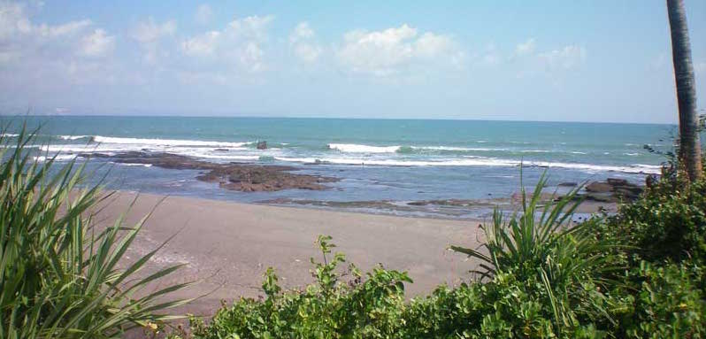
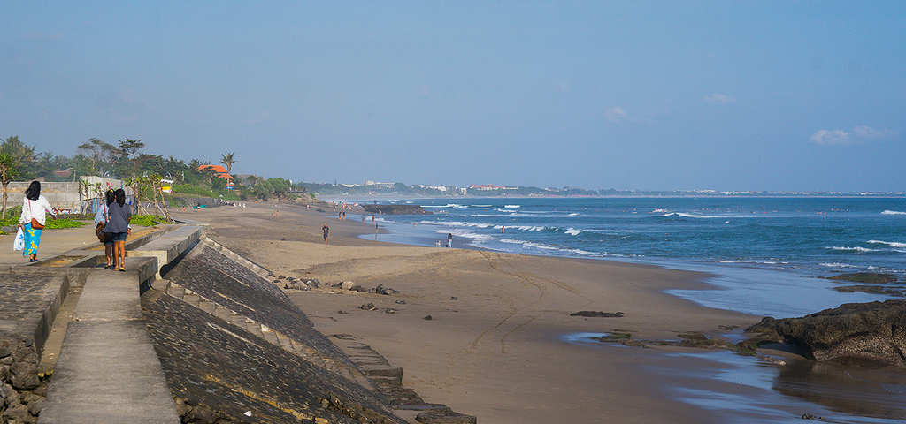
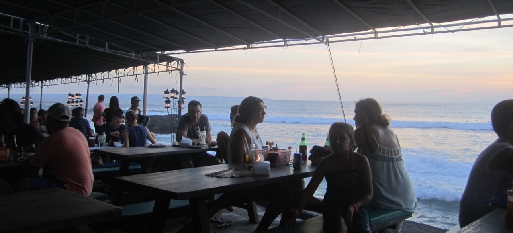
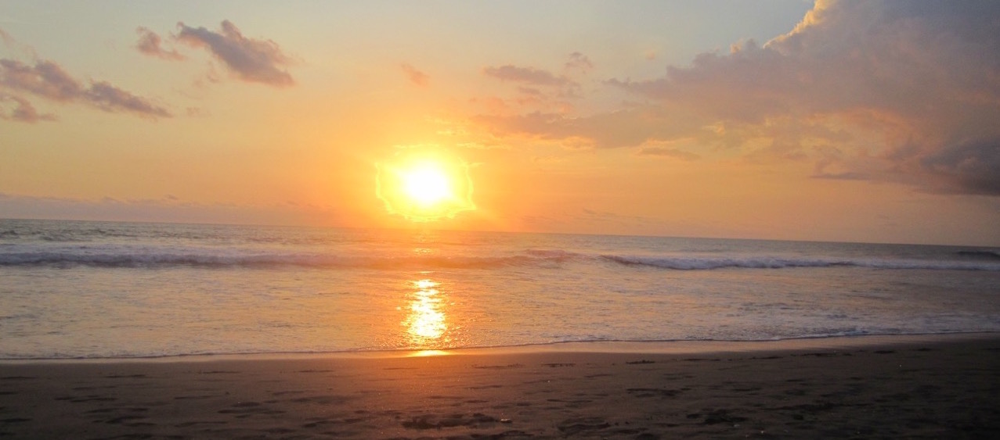

Pererenan Beach is a strait 5 minute drive down the Jl. Pererenan road.

Pererenan beach joins with Echo beach so you can walk from one to the other.

Echo Beach is most popular for its surf reef breaks, beachfront seafood cafes, laid-back hipster vibe ...

and sunsets ...
